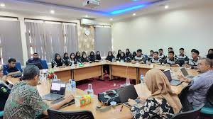

Fakultas Teknologi Informasi Universitas Andalas atau dikenal sebagai FTI Unand adalah salah satu fakultas di lingkungan Universitas Andalas. Gedung FTI Unand terletak di sebelah Gedung Pascasarjana (PPS) Unand. Fakultas Teknologi Informasi Unand merupakan bagian dari kelompok fakultas-fakultas rumpun informatika. Saat ini, FTI Unand dipimpin oleh Dr. Drs. Ahmad Syafruddin Indrapriyatna, M.T. Pada fakultas ini terdapat tiga jurusan, yakni: Jurusan Teknik Komputer, Jurusan Sistem Informasi dan Jurusan Informatika
Fakultas Teknologi Informasi lahir dari pengabungan dua program studi yang berbeda fakultas, yaitu Program Studi Sistem Informasi dari Fakultas Teknik dan Program Studi Sistem Komputer dari Fakultas Matematika dan Ilmu Pengetahuan Alam. Rektor Unand, Werry Darta Taifur meresmikan Fakultas Teknologi Informasi pada hari Jum’at, tanggal 12 Oktober 2012 bertempat di Convention Hall, Kampus Unand Limau Manis, Padang. Fakultas Teknologi Informasi merupakan Fakultas ke-15 serta fakultas terakhir yang diresmikan tahun 2012, setelah sebelumnya Rektor meresmikan Fakultas Kesehatan Masyarakat, Fakultas Kedokteran Gigi, dan Fakultas Keperawatan.
BERITA & ACARA
Pelaksanaan Wisuda IV Tahun 2024
Pada Sabtu (31/8) kembali melaksanakan wisuda ke 4 dengan lulusan sebanyak 81 Orang yang terdiri dari 52 Orang Wisudawan Departemen Teknik Komputer dan 29 Orang Wisudawan Departemen Sistem Informasi yang di gelar di Ruang Seminar Gedung PKM Lantai 1 Unand. Sehingga Saat ini Fakultas Teknologi Informasi Universitas Andalas sudah menghasilkan lulusan dari periode Wisuda ke-1 Tahun 2013 s/d Wisuda ke-52 Tahun 2024 ini sebanyak 1184 Orang. Dengan Lulusan terbaik FTI diraih oleh Fathia Khaira Al Amin, S.T dengan perolehan IPK 3,82 predikat kelulusan “Dengan Pujian” yang berasal dari Departemen Teknik Komputer dan Lulusan Terbaik dari Departemen Sistem Informasi merangkap sebagai Lulusan Terbaik Fakultas yaitu Nadilla Saraswati, S.Kom dengan perolehan IPK 3,89 predikat kelulusan “Dengan Pujian”.

FTI Terima Kunjungan Siswa SMK N 1 Pasir Penyu
Fakultas Teknologi Informasi Universitas Andalas menerima kunjungan dari Siswa SMKN 1 Pasir Penyu pada Rabu (15/11) bertempat di Ruang Rapat FTI Unand. Acara ini di hadiri oleh Wakil Dekan, KaDept, SekDept, Kepala Kantor serta Kasi dilingkungan FTI Unand serta rombongan yang berjumlah sebanyak 28 orang siswa dan 4 orang guru pembimbing. Kunjungan ini disambut oleh Wakil Dekan I FTI Dr. Eng Rahmadi Kurnia dalam sambutannya Wakil Dekan I mengucapkan Terima Kasih kepada siswa dan guru SMKN 1 Pasir Penyu yang telah berkunjung ke FTI UNAND. Agenda pada kunjungan ini diawali dengan perkenalan oleh Wakil Dekan I terkait profil FTI. Adapun maksud dan tujuan pada kunjungan ini selain untuk sharing mengenai Fakultas Teknologi Informasi Universitas Andalas juga sebagai sarana pembelajaran untuk kompetensi keahlian teknik komputer dan jaringan telekomunikasi bagi siswa SMKN 1 Pasir Penyu.
DEPARTEMEN
TK
Teknik Komputer
Jurusan Teknik Komputer di Universitas Andalas, yang sebelumnya bernama Sistem Komputer, adalah bagian dari Fakultas Teknologi Informasi dan didirikan pada 15 Juli 2008 dengan program studi S1 di bawah Jurusan Matematika, FMIPA. Pada 8 Juli 2020, nama jurusan ini berubah menjadi Teknik Komputer, dan gelar lulusannya disesuaikan menjadi Sarjana Teknik (ST) sesuai dengan Keputusan Menteri Pendidikan dan Kebudayaan.
SI
Sistem Informasi
Program Studi Sistem Informasi Universitas Andalas didirikan pada 28 Oktober 2009 di bawah Fakultas Teknik, dengan ketua program studi pertama Prof. Surya Afnarius, Ph.D., dan pada 2010 menerima angkatan pertama sebanyak 50 mahasiswa. Kurikulum program studi ini dirancang untuk mencapai standar kompetensi lulusan yang sesuai dengan Kerangka Kualifikasi Nasional Indonesia (KKNI) dan didirikan untuk memenuhi tingginya permintaan Sarjana Komputer (S.Kom) baik di tingkat regional maupun nasional.
IF
Informatika
Departemen informatika baru memiliki satu program studi yaitu program studi S1 informatika (Prodi Informatika). Prodi Informatika berdiri pada tanggal 31 Maret 2022 berdasarkan SK Rektor : 328/KPT/R/PTN-BH/UNAND/2022. Saat ini program studi S1 Informatika sudah terkareditasi Baik dari BAN-PT. Prodi Informatika adalah prodi ke tiga yang berada di bawah fakultas teknologi informasi UNAND.